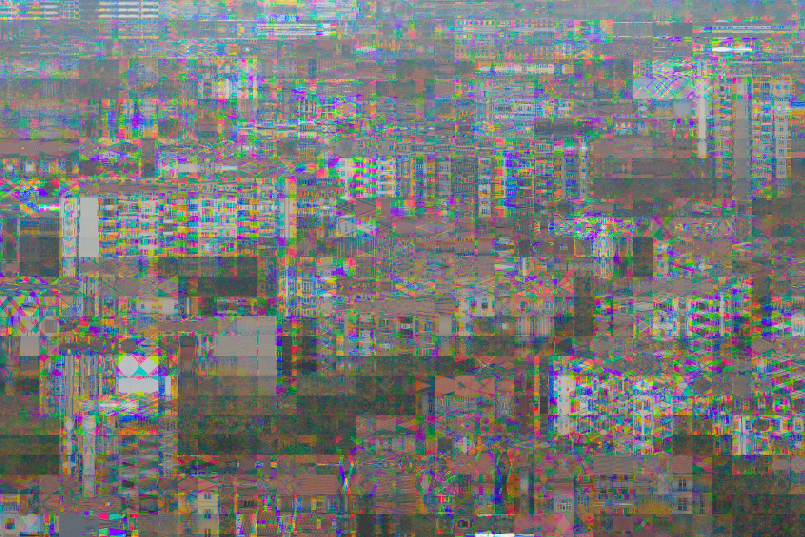
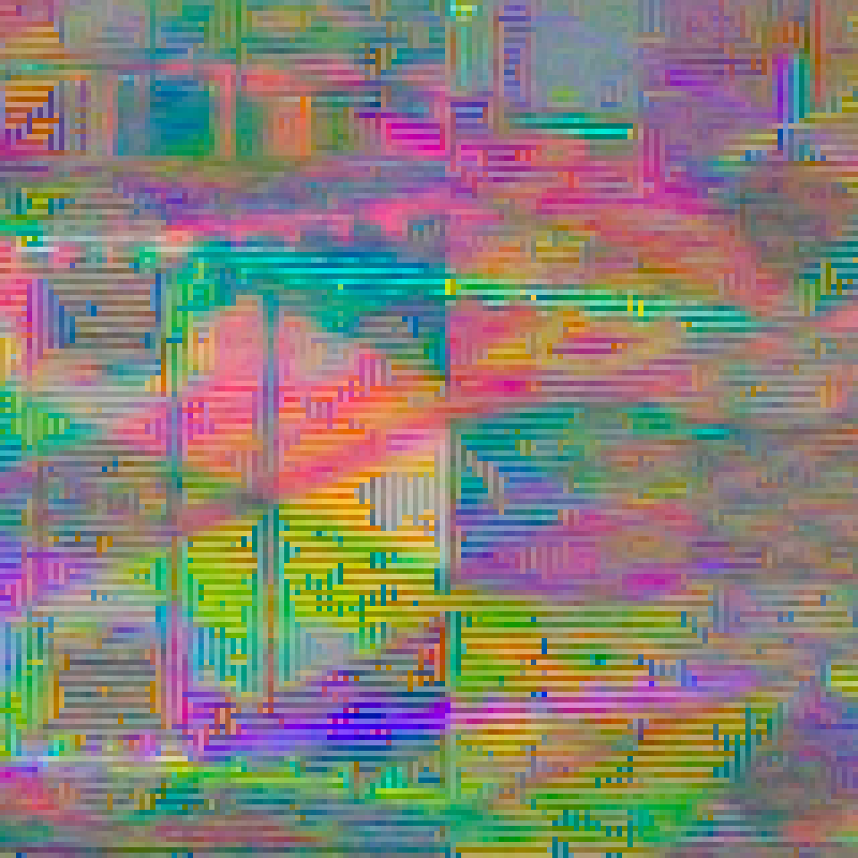
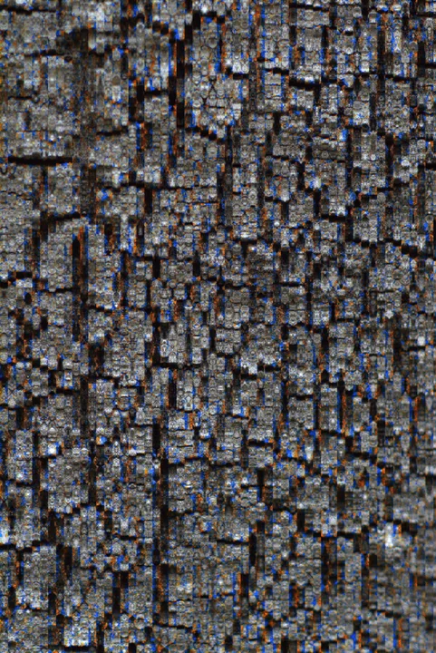
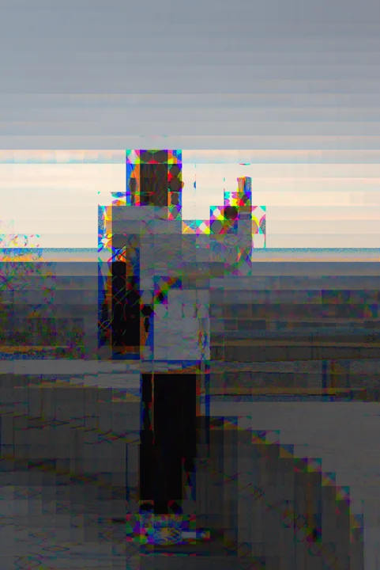
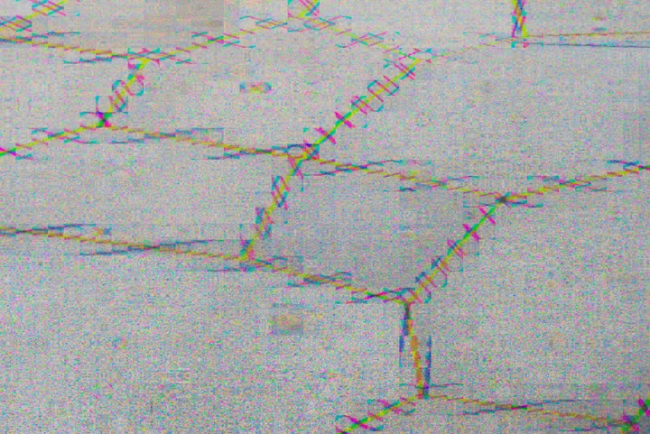
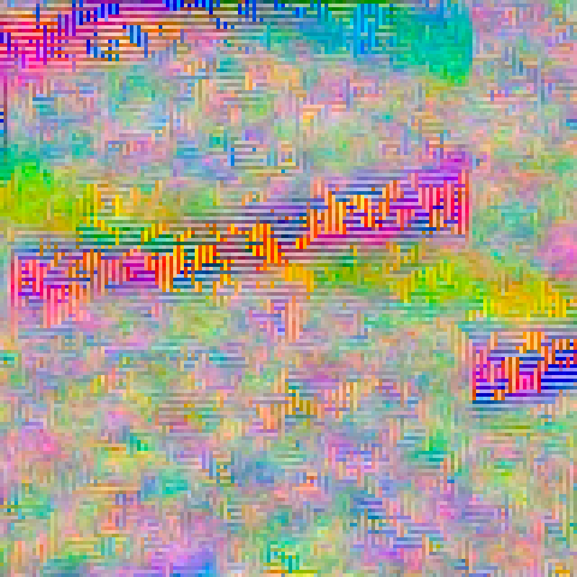

FOR THE ORIGINAL CANON EOS M · 0.1.0
Colour
outside
the pixels.
A familiar scene. A beautiful little misalignment. Turn the sensor’s colour samples into repeating patterns, strange fringes and happy accidents.
Download for EOS MFree & open source. Magic Lantern required.


A whole lot going on.
Made & tested on
the original Canon EOS M.
Canon 2.0.2
Magic Lantern 2025-06-20 / API 8
01 / A LITTLE OUT OF REGISTER
Let the colours
misbehave.
Bayer Drift rearranges tiny groups of colour samples before your photograph becomes an image. Edges split into beads. Textures turn into grids. A plain wall suddenly has a lot to say.
Choose a recipe and press the normal shutter button. The effect is saved directly in your Canon CR2 RAW photograph.
02 / THE GOOD STUFF IS IN THE DETAILS
Get unreasonably
close.
Pick a photograph. Turn up the magnification.
These are real pixels from the supplied RAW files.
A little rough around the edges.
IMG_0011.CR2Click the photograph to choose a spot. Drag either view to explore. Arrow keys move; Shift moves farther; Home resets.
Full-resolution RGB developments, with camera white balance. Lossless detail crops; no extra glitch filter added. Magnification is display pixels per developed-image pixel. About these photographs ↗
03 / OUT IN THE ORDINARY WORLD
Familiar places.
Unfamiliar colour.
A tree. A waterside post. A brick wall.
Photographs by Max Seelig, with Bayer Drift on the EOS M.







04 / PUT IT IN YOUR CAMERA
Pick a recipe.
Find a texture.
Press the shutter.
Compose and focus with normal Canon LiveView. Bayer Drift applies the effect when you take the RAW photograph.
Full installation guide ↗- 01
Check your EOS M.
Original EOS M, Canon firmware 2.0.2, and the Magic Lantern 2025-06-20 EOSM.202 build. Other cameras and ML builds are unverified.
- 02
Add the module.
With the camera OFF, copy
bayer.mointoML/MODULES. Enable it in the Modules tab, disable other MAXmade effects, and restart. - 03
Make something a little strange.
Use A+ / Auto ISO / Canon RAW / single-shot / native 1× LCD. Open Shoot → Bayer Drift → Photo effect ON. Choose a recipe, close the menu, wait for Ready and shoot normally.
A FEW WAYS TO LOSE REGISTRATION
Start subtle.
Get carried away.
Try Subtle, Crunchy or Overdrive. Make it your own with the manual controls, or hit Shuffle for a recipe that stays put until you change it.
- Strength
- 1–8 · local sample displacement
- Pattern
- Dots · Horizontal · Vertical
- Texture size
- Fine · Medium · Coarse
- Phase
- Four colour-sample registrations
- Shuffle
- A new recipe, ready to shoot again
A COUPLE OF GOOD QUESTIONS
Before you
drift off.
Will I see the effect in LiveView?
LiveView stays normal for composing and focusing. The effect is applied to the captured RAW photograph. This release has no simulated LiveView effect preview.
Are these real camera photographs?
Yes. Max supplied the original EOS M CR2 files. The gallery uses standard RAW developments and matching crops. No simulated effect was added for the website. Preset and strength settings were not supplied, so the examples are not labelled as particular recipes.
Will my RAW converter show the same colours?
The effect is in the RAW samples, but the visible result depends on demosaicing and colour processing. Camera review and different RAW converters can look different. Keep your original CR2 files and experiment.
Does this replace my firmware?
No. Bayer Drift is a Magic Lantern add-on module. Magic Lantern must already be installed. The download does not replace Canon firmware or the ML core. This release supports the original EOS M setup listed above, single-shot RAW photography, and no video or burst workflow.
Where did this come from?
An accidental colour-registration glitch while developing Mirror Worlds. It looked too interesting to leave as an accident. Both are camera experiments by MAXmade.
BAYER DRIFT · 0.1.0 · BY MAXMADE
A small module.
A strange new texture.
For the original Canon EOS M, with Magic Lantern.
Free & open source. Normal shutter. Canon RAW.